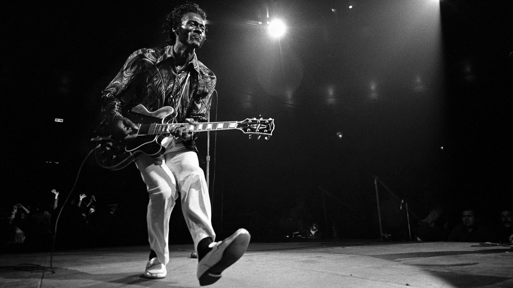

Chuck Berry
Charles Edward Anderson Berry más conocido como Chuck Berry, fue un cantante, compositor, intérprete y guitarrista estadounidense. Es considerado uno de los músicos más influyentes de la historia del rock and roll,3 siendo uno de los pioneros de dicho género musical. A principios de 1953, se unió a la banda de rhythm and blues Sir John Trio, en reemplazo del saxofonista Alvin Bennett. Nació el 18 de octubre de 1926 en San Luis, Misuri y falleció el 18 de marzo de 2017.

Chuck perteneció a la banda de blues Sir John Trio.
Canciones más famosas
- Johnny B.Goode
- Run Rudolph Run
- Syou never can tell
- Sweet Little sixteen